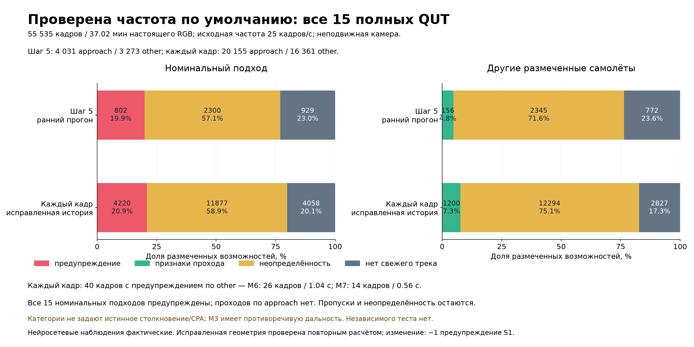

Исследовательский офлайн-прототип • реальные RGB-видео • 18 октября 2026
Что видно о воздушной встрече — и чего камера не знает
Система сравнивает поперечный дрейф и рост видимого размера каждой цели. Причины справа — реальные вычисленные показатели. Цвет не является вероятностью столкновения.
● Возможная угроза● Признаки прохода мимо● Недостаточно данных
Направление полёта не рекомендуется. Внизу роликов сравниваются условные изменения дрейфа при одинаковой глубине целей. Дальности, динамика аппарата, прочие препятствия и связь осей камеры с аппаратом неизвестны.
Разные решения для разных целей
14 с: зелёные признаки прохода у цели №2, жёлтая неопределённость у других. Около 27 с растущая цель получает красное предупреждение. Класс детектора часто ошибочен.
Открыть MP4Предупреждение и неопределённость вместе
Около 26 с приближающаяся цель красная; вторая остаётся жёлтой. Мелкие цели часто пропускаются.
Открыть MP4Ошибка на размеченной категории other
На 6.16–7.16 с этого отрывка (96.16–97.16 с источника) есть предупреждение по другому самолёту. Это 26 кадров / 1.04 с. Отрисовка записанных решений полного прогона, без повторной нейросетевой оценки.
Открыть MP4Трудный случай: нет свежего трека
На 10 с цель ещё не отслеживается. Позже появляется предупреждение. Пустой экран не означает отсутствие угрозы.
Открыть MP4Дополнительные нейросетевые наблюдения
Тот же RGB: предложения небольших фрагментов проверяются YOLO. Сравните раннюю часть с S2 выше. Больше наблюдений ещё не означает более достоверную геометрию.
Открыть MP4Воздушная FPV-съёмка, подвижная камера
Исходное 1920×1080: наклон и движение камеры. Все оценки неопределённы; фоновое выравнивание не разделяет перенос и поворот камеры. Меток столкновения нет.
Открыть MP4Реальный беспилотный вертолёт
Меняется ракурс; все оценки неопределённы. Детекция и сопровождение не устанавливают геометрию сближения. Меток столкновения нет.
Открыть MP4Проверка шире удачного фрагмента

Основная оценка: 15 полных QUT, 37.02 минуты, 11 113 обработанных кадров с шагом 5. Все 15 номинальных подходов имеют предупреждение; у 13 событий other предупреждений нет. Полный покадровый прогон всех 15 источников выявил 40 кадров с предупреждением по категории other: 26 кадров / 1.04 с в M6 и 14 кадров / 0.56 с в M7. Два из 13 событий имеют предупреждения; только M6 достигает критерия 0.8 с. Нельзя переносить нулевой результат между частотами обработки.
QUT снят неподвижной наземной камерой. Категория approach не доказывает физического столкновения, а other не задаёт истинный CPA. M3 имеет противоречивую разметку дальности. Данные уже изучались при разработке; независимого теста нет. Пропуски и неопределённость включены в таблицу.
H.264/yuv420p, исходные интервалы показа сохранены. Текущий M2 на RTX 4060: 20.08 обработанного кадра/с с запуском Python, 23.81 кадра/с в основном цикле; FPV 1920×1080: 10.66 и 12.26 кадра/с соответственно. Это офлайн-производительность, не гарантия потоковой задержки.
Когда появляются предупреждения: все 15 подходов
Краткий русский путеводитель • Результаты и ограничения (English) • Запуск и воспроизведение